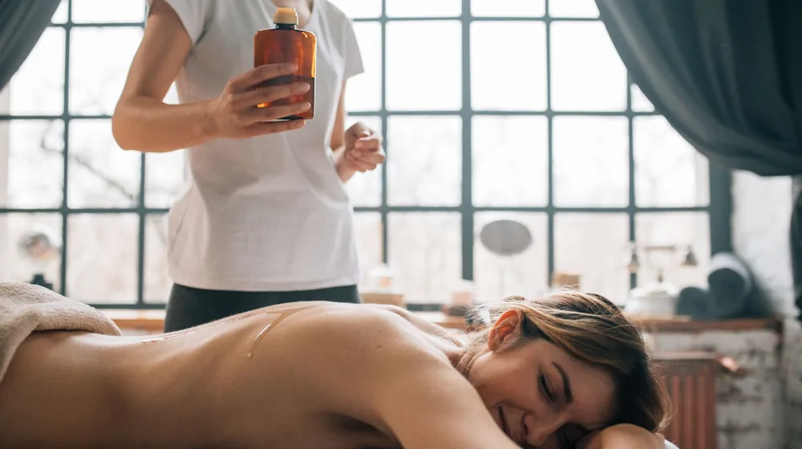

한방 스파 vs 일반 스파, 나에게 맞는 힐링법은? 핵심 차이와 선택 가이드
사진: Nothing Ahead / Pexels (무료 이미지, 출처 표기)
지친 몸과 마음에 어떤 스파를 선물할까요?

지친 몸과 마음에 휴식을 선물하고 싶을 때, 스파를 떠올리지만 한방 스파와 일반 스파 중 어떤 것을 선택해야 할지 고민될 때가 많습니다. 두 종류의 스파는 각기 다른 접근법과 효능을 가지고 있어 나에게 더 적합한 곳을 고르는 것이 중요합니다. 이 글에서는 한방 스파와 일반 스파의 핵심적인 차이점을 명확히 비교하고, 어떤 유형의 스파가 당신의 필요에 더 잘 맞는지 결정할 수 있도록 구체적인 선택 가이드를 제시합니다.
한방 스파는 무엇이고, 일반 스파는 무엇인가요?
한방 스파는 한의학의 기본 원리를 바탕으로 몸의 균형과 조화를 중요하게 여깁니다. 전통 한약재를 활용한 입욕, 아로마 오일 마사지, 뜸, 부항 등 한방 요법을 현대적인 스파 프로그램에 접목하여 제공합니다. 이는 단순한 휴식을 넘어 체질 개선, 기혈 순환 촉진, 만성 피로 해소 등 근본적인 건강 증진을 목표로 합니다.
반면, 일반 스파는 주로 서양식 테라피 기법에 기반을 둡니다. 아로마 마사지, 스웨디시 마사지, 딥 티슈 마사지, 스톤 테라피 등 다양한 수기 요법과 함께 피부 관리, 보디 트리트먼트 등을 제공합니다. 심신의 이완, 스트레스 해소, 근육 통증 완화, 피부 미용 등 즉각적인 편안함과 외적인 아름다움 증진에 집중하는 경향이 있습니다.
한방 스파와 일반 스파, 핵심 차이점은?
두 스파 유형은 지향하는 바와 제공하는 서비스에서 명확한 차이를 보입니다. 아래 표를 통해 주요 차이점을 한눈에 비교해보세요.
나에게 맞는 스파 선택 가이드: 이런 분께 추천해요
한방 스파를 추천하는 경우
- 만성적인 피로, 소화 불량, 불면증 등 원인을 알 수 없는 몸의 불편함을 겪는 분
- 체질 개선과 몸의 전체적인 균형을 회복하고 싶은 분
- 특정 한약재나 뜸, 부항 등 한방 요법에 대한 거부감이 없고 그 효능을 믿는 분
- 계절 변화나 스트레스에 민감하여 몸 컨디션 조절이 필요한 분
일반 스파를 추천하는 경우
- 일상생활의 스트레스로 인해 즉각적인 심신 이완과 휴식이 필요한 분
- 특정 부위의 근육 통증 완화나 피부 탄력 증진 등 미용 관리가 목적인 분
- 향긋한 아로마 오일과 부드러운 마사지를 통해 오감을 만족시키고 싶은 분
- 현대적이고 고급스러운 분위기에서 온전히 나만의 시간을 즐기고 싶은 분
가격과 프로그램: 얼마나 차이가 날까?
스파 프로그램의 가격은 지역, 시설, 테라피스트의 경력, 그리고 제공되는 서비스의 종류에 따라 크게 달라집니다. 2026년 08월 기준으로 일반적인 1시간 스파 프로그램은 8만원에서 30만원 이상까지 다양하게 형성되어 있습니다. 보통 한방 스파는 전문적인 한방 요법과 고급 약재 사용으로 인해 일반 스파보다 다소 높은 가격대를 형성하는 경우가 많습니다.
- 한방 스파 프로그램 예시: 체질별 맞춤 오일 마사지, 오행(五行) 테라피, 약재를 활용한 입욕 및 좌훈, 뜸과 부항을 병행한 전신 관리 등
- 일반 스파 프로그램 예시: 아로마 전신 마사지, 스톤 테라피, 페이셜 트리트먼트, 딥 티슈 마사지, 커플 스파 패키지 등
정확한 가격과 프로그램 내용은 각 스파의 공식 홈페이지나 직접 문의를 통해 확인하는 것이 가장 좋습니다. 방문 전 여러 곳을 비교해보는 것을 권장합니다.
이용 전 꼭 알아두세요: 주의사항 및 팁
만족스러운 스파 경험을 위해 다음 사항들을 미리 확인하고 준비하세요.
- 충분한 상담: 스파를 이용하기 전, 반드시 전문가와 자신의 몸 상태, 알레르기 유무, 원하는 효과 등에 대해 충분히 상담해야 합니다. 특히 한방 스파의 경우, 체질에 맞지 않는 약재는 부작용을 일으킬 수 있으므로 정확하게 전달하는 것이 중요합니다.
- 알레르기 및 질환 고지: 특정 한약재, 아로마 오일, 또는 마사지 압력에 알레르기가 있거나 고혈압, 당뇨 등 지병이 있다면 사전에 반드시 스파 측에 알려야 안전하게 서비스를 받을 수 있습니다.
- 예약 필수: 인기 있는 스파는 예약이 필수적이며, 주말이나 특정 시간대는 미리 마감될 수 있습니다. 최소 며칠 전에는 예약하는 것이 좋습니다.
- 개인의 만족도: 스파는 개인차가 큰 서비스입니다. 다른 사람의 후기나 평점이 좋더라도 자신에게는 맞지 않을 수 있으니, 직접 경험해보고 판단하는 것이 가장 중요합니다.
2026년 08월 기준으로, 각 스파별 프로그램과 가격은 상이할 수 있으니 방문 전 공식 채널을 통해 최신 정보를 확인하시길 권장합니다.
🔗 이 글도 함께 보면 좋아요: 필라테스 vs 요가, 나에게 딱 맞는 운동은? 5가지 핵심 차이 비교
관련 추천 상품
아로마 오일, 스파 마사지 용품, 힐링 입욕제 관련 인기 상품 보러가기
이 포스팅은 쿠팡 파트너스 활동의 일환으로, 이에 따른 일정액의 수수료를 제공받습니다.